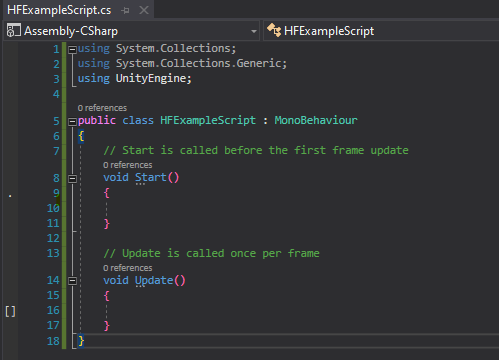
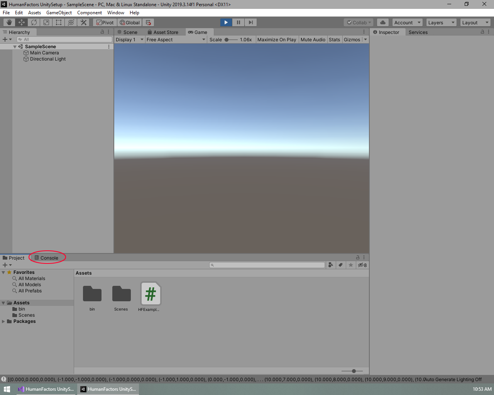
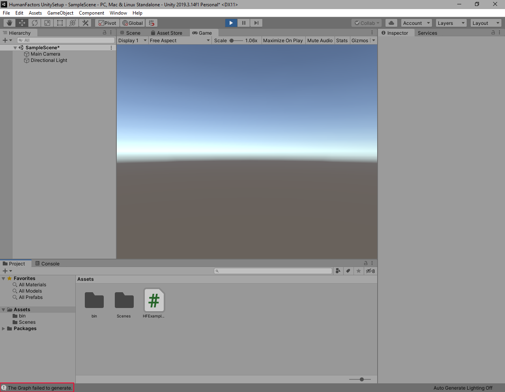

Table of Contents
Previous Tutorial: Project Setup | Next Tutorial: Passing a Mesh From Unity to HumanFactors
Intro
This tutorial picks up from where Tutorial 1: Unity Project Setup ended. If you are just beginning here, then you can download the Unity project from the bottom of tutorial 1.
In this tutorial we will cover the following:
- Calling the GraphGenerator with a BVH, spacing, and a start point.
- Reading nodes from a graph after it has been generated.
- Handling cases where the GraphGenerator could not generate a graph.
Conceptual Overview
To put it simply, the Graph Generator maps out "accessible" space on a model from a given starting point. As the name implies, this map of the space is stored as a series of nodes and edges in a Graph. Each node represents a point in space that a human can occupy, and each edge between nodes indicates that a human can traverse from one node to another node. The Graph Generator is a powerful tool for analyzing space, since the graph or nodes it outputs can be used as input to all the analysis methods offered by HumanFactors. This allows the user to go straight from modifying a model or scene, to analyzing it with minimal effort.
Simple Graph Generation
For now, we will begin with the minimum required settings to run the Graph Generator then work our way up to examples that make use of the optional settings. To generate a graph at minimum, the following arguments are required:
- A BVH containing the mesh you want to use for graph generation.
- A point to start graph generation at.
- The spacing between nodes.

Figure 3.1 Blank HFExampleScript.cs
To begin: open the blank HFExample Script that we created in the project setup by double clicking on it in the Unity editor if it isn't open already. You should see a blank page like the above. If you're coming from a previous script, please clear it so it matches this.
Using Declarations

Figure 3.2 Using declarations for this tutorial
To get started, we will once again set up our using declarations to import the functionality we need, starting on line 3 of our blank script.
Creating the Plane
Internally, the graph uses the EmbreeRayTracer which requires a BVH, so we can follow the process as the Project 2A to create a plane, then generate a BVH from it. If you want a more in-depth explanation of this code, please look at the previous tutorial if you want more information about this code.
Add the following code in the body of the Start method on line 13:

Generating the Graph
Now that we have a BVH, let's generate a graph on it. In the code below, we will define a starting point for the graph, then the spacing between each node.
We'll place our start point 1 meter above the origin of the scene (0,0,1). Starting directly at the origin, (0,0,0), would put the start point inside of the plane we're using for the ground causing the initial ground check to fail.
We'll use a spacing of one meter in each direction, so each node in our graph will be at maximum one meter apart.
Finally, we will call the GraphGenerator with these arguments.
All of that together is:

Retrieving a list of nodes
Our graph G now contains a graph of the accessible space on the plane generated using the settings we passed as arguments. To verify that our results are correct, we will get a list of nodes from the graph, then print them to the unity console.
Enter the following code at the bottom of the start method:

Save and Test
Here is the full script we've created from this demo. Make sure yours matches it before moving on to testing.
Once you've confirmed that your script matches this code, save your script, minimize Visual Studio, then switch back to the Unity Editor.

Figure 3.3 Dragging HFExampleScript onto the Main Camera as a component.
The process for testing this script is identical to the process in The Raytracer Tutorial. Attach the script to the main camera, then press the play button and inspect your output.

Figure 3.4 How to view the Console Tab
Like in the previous tutorial, the output is at the bottom of the screen, but it doesn't fit in on one line, so it's cut off. To get a better view, click on the output itself, or click on the console tab circled in Figure 3.4 to view the console. The console contains a history of outputs, as well as the option to click on any output message to get more information.

Figure 3.5 Highlighted Graph Output and how to switch back to the assets window
Once the console tab is open, click on the message containing the graph generator's output, highlighted in blue in Figure 3.5, for a more detailed view. Like in Figure 3.5, the highlighted text should read:
Note: this is not the full list of nodes. The list has been truncated due to the size of the output. To view every node, you must print them in a loop.
Confirm your results match, then switch back to the previous view by clicking on the Project tab circled in red in Figure 3.5. After that, exit playmode by clicking on the blue play button at the top of the screen. If you've reached this point, then you have successfully generated a Graph using Human Factors and have completed this part of the tutorial. Next we will cover cases where the graph generator will be unable to generate a graph, and how to handle if a graph could not be generated.
Handling cases where a Graph could not be generated
We've covered situations where we know the GraphGenerator will generate a graph, however it's important to know what happens in situations where it is unknown if a graph can be generated because we're taking user input, operating on a new model, or making changes to the geometry we're generating the graph on.
A Graph can fail to generate if at least one of the two cases is true:
- The initial ground check didn't intersect with any geometry, usually means the start point wasn't over the ground.
- The Graph Generator couldn't generate any nodes after the initial ground check. Some examples of this are.
- The ground check was in a space too narrow to generate any extra nodes given the current spacing
- The start point was on a slope too steep for the upslope/downslope to traverse up or down.
- The start point is in a wall, making it impossible to generate any nodes around it.
This tutorial will cover safely handling cases where graphs could not be generated by checking the return value of the graph generator.
Checking for success
If the Graph Generator failed due to one of the two cases listed above, a null value will be returned instead of a graph. To catch when this happens, let's add a null check just after the graph is generated on Line 41.
Now, if the graph fails to generate, our code will print a clear error message and immediately stop executing the script. If we did not have this check and our graph did fail to generate, then we would get a confusing Null Reference Exception later when interacting with the graph.
Testing
To test that our null check is successful, we'll go to line 34 and change our start point to be at (200, 0, 1) instead of (0,0,1): Vector3D start_point = new Vector3D(200, 0, 1); This is far, far beyond where our plane is and should result in case 1: the initial ground check failing to find any valid ground.
 method for this test.")
Since the camera is already setup, all we need to do is enter playmode to test this. Make sure your code matches the picture, save the file, minimize Visual Studio, open the Unity editor, then press the play button.

Figure 3.5 Our error message printed after the graph failed to generate
If you did this correctly, then the error message we wrote earlier should appear instead of the output from the previous section. If you received this result, then you now know how to handle cases where the graph generator could not generate a graph.
Conclusion
Here is a link the full project created in this guide: Full Project
In this tutorial we successfully generated a graph from a bvh, start point, and spacing. We also handled a case where a graph was unable to be generated, and wrote a custom error message to be printed instead of throwing a null reference exception.
In the next tutorial, Reading Meshes From Unity, we will use geometry from the Unity scene to generate a graph, instead of manually creatng our own plane.